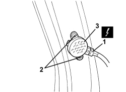
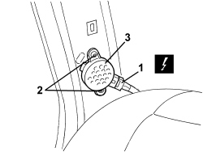

5580H16 REAR BUZZER OF PARKING OBSTICLE DETECTION DEVICE R R
- Path
- Procedures > 55 ELECTRICAL EQUIPMENT > 5580 SPECIAL ACCESSORIES > 5580H PARKING OBSTACLE DETECTION DEVICE > 5580H16 REAR BUZZER OF PARKING OBSTICLE DETECTION DEVICE R R
- Kind
- repair procedure (removal / refitting; the operation number is the code)
- Applies to
- all engines; all production periods
- Interactive page
- https://sloeber94.github.io/elrnDB/#/939004812
Applies to: all engines; all production periods
 Removing
Removing
 Refitting
RefittingOp. 7050A20 ONE-PIECE REAR SEAT CUSHION - R.R.
Op. 7040L44 REAR DOOR RUNNING BOARD (ONE), LEFT OR RIGHT - R.R.
Op. 7050A19 REAR SEAT BACKREST - R.R
Op. 7040H42 REAR PILLAR TRIM (ONE), LEFT OR RIGHT- R.R
1. Disconnect the electrical connection.
Description | Component |
|---|---|
PARKING SENSOR BUZZER |
2. Undo the bolts.
3. Remove the buzzer.

Applies to: all engines; all production periods
Refitting
Removing- Check that the buzzer is not damaged.
- Place the buzzer in position and tighten the bolts.
- Connect the electrical connection.
Op. 7040H42 REAR PILLAR TRIM (ONE), LEFT OR RIGHT- R.R
Op. 7050A19 REAR SEAT BACKREST - R.R
Op. 7040L44 REAR DOOR RUNNING BOARD (ONE), LEFT OR RIGHT - R.R.
Applies to: all engines; all production periods; only with equipment: Station Wagon
Removing
Refitting- Work on the left side.
Op. 7040H42 REAR PILLAR TRIM (ONE), LEFT OR RIGHT- R.R
1. Disconnect the electrical connection.
Description | Component |
|---|---|
PARKING SENSOR BUZZER |
2. Undo the bolts.
3. Remove the buzzer.

Applies to: all engines; all production periods; only with equipment: Station Wagon
Refitting
Removing- Check that the buzzer is not damaged.
- Place the buzzer in position and tighten the bolts.
- Connect the electrical connection.
Topics linked from this page (5)
- 7040H42 REAR PILLAR TRIM (ONE), LEFT OR RIGHT- R.R
- 7040L44 REAR DOOR RUNNING BOARD (ONE), LEFT OR RIGHT - R.R.
- 7050A19 REAR SEAT BACKREST - R.R
- 7050A20 ONE-PIECE REAR SEAT CUSHION - R.R.
- P044 PARKING SENSOR BUZZER